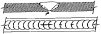
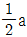
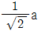
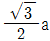

방사선비파괴검사기능사 (2014-01-26 기출문제)
1과목: 방사선투과시험법
1. 초음파 진동자에서 초음파의 발생효과는 무엇인가?
- 진동효과
- 압전효과
- 충돌효과
- 회절효과
(정답률: 66%)

2. 자분탐상시험에서 자력선 성질이 아닌 것은?
- N극에서 나와서 S극으로 들어간다.
- 자력선의 밀도가 큰 곳은 자계가 세다.
- 자력선의 밀도는 그 점에서 자계의 세기를 나타낸다.
- 자력선은 도중에서 갈라지거나 서로 교차한다.
(정답률: 69%)
3. 표면코일을 사용하는 와전류탐상시험에서 시험코일과 시험체 사이의 상대 거리의 변화에 의해 지시가 변화하는 것을 무엇이라 하는가?
- 오실로스코프 효과
- 표피 효과
- 리프트 오프 효과
- 카이저 효과
(정답률: 62%)
4. 기포누설시험에 사용되는 발포액의 특성으로 옳지 않은 것은?(오류 신고가 접수된 문제입니다. 반드시 정답과 해설을 확인하시기 바랍니다.)
- 점도가 높을 것
- 적심성이 좋을 것
- 표면장력이 좋을 것
- 시험품에 영향이 없을 것
(정답률: 66%)
5. 방사선투과시험시 농도가 짙은 사진이 나오는 일반적인 이유 2가지가 모두 옳은 것은?
- 초과 노출과 과현상
- 불충분한 세척과 과현상
- 초과 노출과 오염된 정착액
- 오염된 정착액과 불충분한 세척
(정답률: 75%)
6. 단면적 1m2인 환봉을 10kg의 하중으로 인장할 경우 인장응력은?
- 0.098Pa
- 9.8Pa
- 98Pa
- 980Pa
(정답률: 51%)
7. 자분탐상시험의 특징에 대한 설명으로 틀린 것은?
- 핀홀과 같은 점 모양의 결함은 검출이 어렵다.
- 자속방향이 불연속 위치와 수직하면 결함 검출이 어렵다.
- 시험체 두께방향의 결함 깊이에 관한 정보는 얻기가 어렵다.
- 표면으로부터 깊은 곳에 있는 결함의 모양과 종류를 알기는 어렵다.
(정답률: 65%)
8. 내마모성이 요구되는 부품의 표면 경화층 깊이나 피막두께를 측정하는데 쓰이는 비파괴검사법은?
- 적외선분석검사(IRT)
- 방사선투과검사(RT)
- 와전류탐상검사(ECT)
- 음향방출검사(AE)
(정답률: 71%)
9. 시험체를 가압 도는 감압하여 일정한 시간이 지난 후 압력변화를 계측하여 누설검사하는 방법을 무엇이라 하는가?
- 헬륨 누설검사
- 암모니아 누설검사
- 압력변화 누설검사
- 전위차에 의한 누설검사
(정답률: 76%)
10. 비파괴검사의 신뢰도를 향상시킬 수 있는 내용을 설명한 것으로 틀린 것은?
- 비파괴검사를 수행하는 기술자의 기량을 향상시켜 검사의 신뢰도를 높일 수 있다.
- 제품 또는 부품에 적합한 비파괴검사법의 선정을 통해 검사의 신뢰도를 향상시킬 수 있다.
- 제품 또는 부품에 적합한 평가 기준의 선정 및 적용으로 검사의 신뢰도를 향상시킬 수 있다.
- 검출 가능한 모든 지시 및 불연속을 제거함으로써 검사의 신뢰도를 향상시킬 수 있다.
(정답률: 81%)
11. 직선도체에 500A의 전류를 통했을 때 도선의 중심에서 50cm 떨어진 위치에서의 자계의 세기는 얼마인가?
- 약 1.6[A/m]
- 약 3.2[A/m]
- 약 160[A/m]
- 약 320[A/m]
(정답률: 41%)
12. 형광침투액을 사용한 침투탐상시험의 경우 자외선등 아래에서 결함지시가 나타내는 일반적인 색은?
- 갈색
- 자주색
- 황록색
- 청색
(정답률: 76%)
13. 다른 비파괴검사법과 비교했을 때 방사선투과시험의 특징에 대한 설명으로 틀린 것은?
- 표면균열만을 검출할 수 있다.
- 반영구적인 기록이 가능하다.
- 내부결함의 검출이 가능하다.
- 방사선 안전관리가 요구된다.
(정답률: 85%)
14. 비파괴검사법 중 일반적으로 결함의 깊이를 가장 정확히 측정할 수 있는 시험법은?
- 자분탐상시험
- 침투탐상시험
- 방사선투과시험
- 초음파탐상시험
(정답률: 78%)
15. 필름 용액에 의한 물자국(줄무늬)과 같은 인공결함이 생기는 주된 원인은?
- 현상액의 온도가 너무 높을 때 생긴다.
- 현상할 때 교반을 시키지 않을 때 생긴다.
- 정지액을 사용하지 않을 때 생긴다.
- 정착액의 능력이 저하되었을 때 생긴다.
(정답률: 37%)
16. 방사선투과시험의 현상처리에서 수동현상법과 비교한 자동 현상법에 관한 설명으로 틀린 것은?
- 투과사진의 균질성이 더 높다.
- 현상액의 온도조절이 비교적 쉽다.
- 현상액의 공기 산화가 크다.
- 수동현상법보다 실패율이 적다.
(정답률: 58%)
17. 방사선 물질의 원자수가 붕괴되어 반으로 줄어드는데 소요되는 시간을 무엇이라 하는가?
- 클롬
- 큐리
- 반감기
- 반가층
(정답률: 85%)
18. 방사선투과검사의 필름현상처리의 순서로 옳은 것은?
- 수세-건조-현상-정지-정착
- 현상-정지-정착-수세-건조
- 건조-현상-정지-정착-수세
- 정착-수세-건조-현상-정지
(정답률: 72%)
19. 방사선 투과사진에서 작은 결함을 검출할 수 있는 능력을 나타내는 용어는?
- 투과사진의 농도
- 투과사진의 명료도
- 투과사진의 감도
- 투과사진의 대조도
(정답률: 66%)
20. 방사선발생장치에서 필라멘트와 포커싱 컵(focusing cup)은 다음 중 어떤 것의 필수 부품인가?
- 음극
- 양극
- 정류기
- X선 트랜스
(정답률: 53%)
2과목: 방사선안전관리 관련규격
21. 방사선투과시험시 투과도계를 사용하는 목적의 설명으로 가장 적합한 것은?
- 결함 크기를 측정하는 것이다.
- 노출선도를 작성하는 기준이다.
- 결함 식별력을 판단하는 기준이다.
- 결함의 형태를 측정하기 위함이다.
(정답률: 56%)
22. Ir-192에 대한 설명으로 틀린 것은?
- 강 제품의 촬영범위는 대략 3 ~ 75mm 이다.
- 반감기는 약 75일 이다.
- 에너지는 대략 0.3 ~ 0.6MeV 이다.
- 알루미늄에 대한 반가층은 약 0.15cm 이다.
(정답률: 46%)
23. X선 발생장치에서 관전압(kV), 조사시간 외에 조절이 가능한 인자는?
- 온도
- 필라멘트와 초점과의 거리
- 초점의 크기
- 관전류
(정답률: 55%)
24. 모재의 두께가 5.0mm인 강판의 맞대기 이음부를 방사선투과검사하여 상질이 A급인 투과사진을 얻고자 할 때, 다음의 바늘형 투과도계의 호칭번호 중 맞는 것은? (단, 시험부에서의 식별 최소선지름은 0.16mm 이다.)
- 04F
- 08F
- 04A
- 08A
(정답률: 57%)
25. 방사선투과시험에 사용되고 있는 Ir-192 동위원소의 양성자 수는?
- 76
- 77
- 86
- 87
(정답률: 56%)
26. X선과 γ선의 차이를 설명한 것으로 틀린 것은?
- X선과 γ선은 발생하는 원리가 다르다.
- 사용하지 않는 경우에 γ선원은 차폐를 해야 한다.
- X선은 전원이 필요하나 γ선은 필요치 않다.
- X선은 에너지의 조절이 어려우나 γ선의 에너지는 빔의 조절이 가능하다.
(정답률: 61%)
27. 용접부에 발생하는 결함 가운데 그림의 화살표와 같은 용접부의 결함은?

- 용락
- 기공
- 루트부 언더컷
- 루트부 오목상
(정답률: 70%)
28. 등가선량을 구할 때 사용되는 방사선 가중치 중 광자, 전자에 대한 계수로 옳은 것은?
- 0.1
- 1
- 10
- 20
(정답률: 64%)
29. 원자력안전법시행령에서 규정하는 수시출입자의 피폭에 대한 연간 유효선량한도로 올바른 것은?
- 1.2 밀리 시버트
- 12 밀리 시버트
- 150 밀리 시버트
- 1.5 시버트
(정답률: 61%)
30. 강용접 이음부의 방사선투과 시험방법(KS B 0845)에 따라 모재두께 10mm 의 강판 맞대기 용접이음부를 방사선투과검사할 때 결함의 분류에서 일단 제외되는 것은?
- 슬래그혼입
- 언더컷
- 용입불량
- 융합불량
(정답률: 66%)
31. 스테인리스강 용접부의 방사선투과 시험방법 및 투과사진의 등급분류 방법(KS B 0237)에 의한 재료 두께와 투과도계 식별도의 관계가 옳은 것은?
- 상질이 보통급일 때 모든 두께에 대하여 투과도계 식별도는 2.0이하이어야 한다.
- 상질이 특급일 때 재료 두께가 100mm 이하인 경우 투과도계 식별도는 2.0이하이어야 한다.
- 상질이 특급일 때 재료 두께가 100mm 초과인 경우 투과도계 식별도는 1.5이하이어야 한다.
- 상질이 보통급일 때 재료 두께가 50mm 이하인 경우 투과도계 식별도는 2.5이하이어야 한다.
(정답률: 28%)
32. 1rem에 대한 국제 단위인 Sv로 환산한 값은?
- 1 Sv
- 0.1Sv
- 0.01Sv
- 1 mSv
(정답률: 55%)
33. 강용접 이음부의 방사선투과 시험방법(KS B 0845)의 계조계의 구조에 대한 설명으로 옳은 것은?
- 형의 종류에는 15형, 20형, 25형 등이 있다.
- 15형은 두께가 1.0mm이고 정사각형이며 한변의 길이는 10mm로 한다.
- 25형은 두께가 4.0mm이고 정사각형이며 한변의 길이는 15mm로 한다.
- 계조계의 치수허용차는 한변의 길이에 대하여 ±5% 로 한다.
(정답률: 69%)
34. 단시간 내에 전신에 받는 방사선 피폭선량과 이 때 발생하는 급성 장해의 영향에 대한 설명으로 틀린 것은?
- 피폭선량이 0 ~ 0.25Sv 인 경우, 임상적 증산은 거의 없다.
- 피폭선량이 0.25 ~ 0.5Sv 인 경우, 임파구(백혈구)의 수는 일시적으로 감소한다.
- 피폭선량이 1 ~ 2Sv 인 경우, 구역질 등 방사선 숙취현상이 나타난다.
- 피폭선량이 2 ~ 4Sv 인 경우, 피폭자는 100% 사망한다.
(정답률: 63%)
35. 배관 용접부의 비파괴 검사방법(KS B 0888)에서 규정되어 있는 촬영방법에 따라 관의 살두께가 9mm인 용접부를 A급 상질로 촬영하였을 때 투과도계의 식별 최소 선지름은 얼마인가?
- 0.16mm
- 0.20mm
- 0.25mm
- 0.32mm
(정답률: 33%)
36. 방사성 동원원소를 이동 사용하여 방사선 작업을 하는 경우에 대한 설명으로 틀린 것은?
- 반드시 2인 이상을 1조로 편성하여야 한다.
- 방사성동원원소취급자 일반면허 또는 감독자면허취득자가 반드시 조장이 되어야 한다.
- 법에 의해 비파괴검사종사자 자격 교육을 이수한 자는 조장이 될 수 있다.
- 휴식 중에는 조사장치의 도난, 분실을 방지하기 위하여 감시인을 배치하여야 한다.
(정답률: 54%)
37. 주강품의 방사선투과 시험방법(KS D 0227)에 따라 흠의분류시 1류에 대하여 블로홀의 세지 않는 홈의 최대치수를 나타낸 것으로 틀린 것은?
- 시험부의 호칭두께 10mm이하일 때 0.4mm
- 시험부의 호칭두께 10mm초과 20mm 이하일 때 0.7mm
- 시험부의 호칭두께 20mm초과 40mm 이하일 때 1.0mm
- 시험부의 호칭두께 40mm초과 80mm 이하일 때 1.5mm
(정답률: 34%)
38. 어떤 감마선원에서 2m 거리에 조사되는 방사선량율이 360mR/h 이다. 6HVL의 물질로 차폐했을 때의 선량률은? (단, HVL는 반가층을 나타낸다.)
- 5.625mR/h
- 7.635mR/h
- 8.265mR/h
- 21.66mR/h
(정답률: 59%)
39. 주강품의 방사선투과 시험방법(KS D 0227)에 따른 주강품의 투과시험시 흠의 영상분류에 대한 설명으로 틀린 것은?
- 블로홀은 호칭 두께 1/2을 초과하는 경우 6류로 한다.
- 모래 박힘이 30mm를 초과하는 경우 4류로 한다.
- 갈라짐인 경우 모두 6류로 한다.
- 나뭇가지모양 슈링키지인 경우 호칭두께 10mm이하, 시야 50mm일 때 흠면적이 3500mm2이면 5류로 한다.
(정답률: 27%)
40. 알루미늄 T형 용접부 방사선투과시험방법(KS D 0245)에 따라 모재 두께가 각각 10mm와 4mm인 T형 용접부를 투과검사할 때 요구되는 계조계의 종류는?
- A형
- B형
- C형
- D형
(정답률: 48%)
3과목: 금속재료일반 및 용접 일반
41. 주강품의 방사선투과 시험방법(KS D 0227)에 따라 방사선투과검사시 시험부의 호칭두께 변화가 적고 평판시험체에 가까운 것에 적용하는 투과사진의 상질은?
- A급
- B급
- 1급
- 2급
(정답률: 49%)
42. 방사선 측정기의 사용 목적이 틀린 것은?
- 단창형 GM계수관 –방사능 측정
- 전리함식 계수관 –방사선량율 측정
- 섬광계수장치 - γ선의 스펙트럼 측정
- BF3 계수관 - β 방사선량 측정
(정답률: 41%)
43. 6:4 황동에 철을 1% 내외 첨가한 것으로 주조재, 가공재로 사용되는 합금은?
- 인바
- 라우탈
- 델타메탈
- 하이드로날륨
(정답률: 49%)
44. 다음 중 형상 기억 합금으로 가장 대표적인 것은?
- Fe –Ni
- Ni –Ti
- Cr –Mo
- Fe –Co
(정답률: 69%)
45. 탄소강 중에 포함된 구리(Cu)의 영향으로 옳은 것은?
- 내식성을 저하시킨다.
- Ar1의 변태점을 저하시킨다.
- 탄성한도를 감소시킨다.
- 강도, 경도를 감소시킨다.
(정답률: 35%)
46. 비중 7.14 용융점 약 419℃ 이며 다이캐스팅용으로 많이 이용되는 조밀육방격자 금속은?
- Cr
- Cu
- Zn
- Pb
(정답률: 64%)
47. 다음 중 소성가공에 해당되지 않는 가공법은?
- 단조
- 인발
- 압출
- 표면처리
(정답률: 68%)
48. 주철에서 어떤 물체에 진동을 주면 진동에너지가 그 물체에 흡수되어 점차 약화되면서 정지하게 되는 것과 같이 물체가 진동을 흡수하는 능력은?
- 감쇠능
- 유동성
- 연신능
- 용해능
(정답률: 80%)
49. Fe-C 평형상태도에서 자기 변태만으로 짝지어진 것은?
- A0변태, A1변태
- A1변태, A2변태
- A0변태, A2변태
- A3변태, A4변태
(정답률: 53%)
50. 다음 합금 중에서 알루미늄 합금에 해당되지 않는 것은?
- Y합금
- 콘스탄탄
- 라우탈
- 실루민
(정답률: 75%)
51. 다음 중 슬립(Slip)에 대한 설명으로 틀린 것은?
- 슬립이 계속 진행하면 변형이 어려워진다.
- 원자밀도가 최대인 방향으로 슬립이 잘 일어난다.
- 원자밀도가 가장 큰 격자면에서 슬립이 잘 일어난다.
- 슬립에 의한 변형은 쌍정에 의한 변형보다 매우 작다.
(정답률: 48%)
52. 다음 중 시효경화성이 있는 합금은?
- 실루민
- 알팍스
- 문쯔메탈
- 두랄루민
(정답률: 48%)
53. 다음 중 볼트, 너트, 전동기축 등에 사용되는 것으로 탄소함량이 약 0.2 ~ 0.3% 정도인 기계구조용 강재는?
- SM25C
- STC4
- SKH2
- SPS8
(정답률: 64%)
54. 주철의 물리적 성질을 설명한 것 중 틀린 것은?
- 비중은 C, Si 등이 많을수록 커진다.
- 흑연편이 클수록 자기 감응도가 나빠진다.
- C, Si 등이 많을수록 용융점이 낮아진다.
- 화합 탄소를 적게 하고 유리 탄소를 균일하게 분포시키면 투자율이 좋아진다.
(정답률: 44%)
55. 분말상 Cu에 약 10% Sn 분말과 2% 흑연 분말을 혼합하고, 윤활제 또는 휘발성 물질을 가한 후 가압 성형하여 소결한 베어링 합금은?
- 켈밋 메탈
- 배빗 메탈
- 엔티프릭션
- 오일리스 베어링
(정답률: 54%)
56. 체심입방격자(BCC)의 근접 원자간 거리는? (단, 격자정수는 a이다.)
- a



(정답률: 53%)
57. 보통 주철(회주철) 성분에 0.7 ~ 1.5% Mo, 0.5 ~ 4.0% Ni을 첨가하고 별도로 Cu, Cr을 소량 첨가한 것으로 강인하고 내마멸성이 우수하여 크랭크축, 캠축, 실린더 등의 재료로 쓰이는 것은?
- 듀리론
- 니 - 레지스트
- 애시큘러 주철
- 미하나이트 주철
(정답률: 50%)
58. 셀룰로오스(유기물)를 20 ~ 30% 정도 포함하고 있어 용접 중 가스를 가장 많이 발생하는 용접봉은?
- E4311
- E4316
- E4324
- E4327
(정답률: 54%)
59. 진유납이라고도 말하며 구리와 아연의 합금으로 그 융점은 820℃ ~ 935℃ 정도인 것은?
- 은납
- 황동납
- 인동납
- 양은납
(정답률: 65%)
60. 산소 –아세틸렌 가스용접기로 두께가 2mm인 연강판의 용접에 적합한 가스용접봉의 이론적인 지름(mm)은?
- 1
- 2
- 3
- 4
(정답률: 48%)